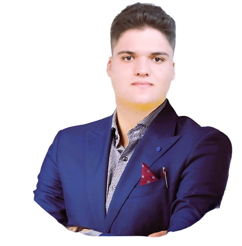
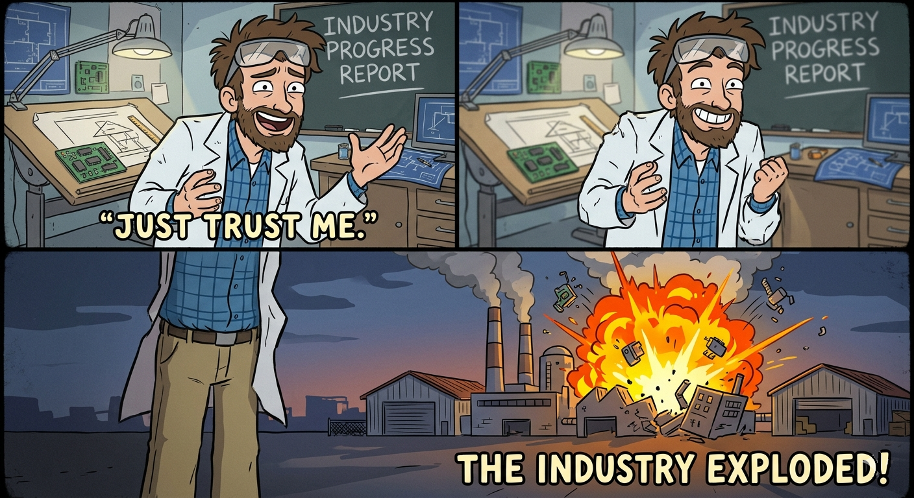

Ingenieur electromechanique
Ingenieur motive titulaire d'un Master en systemes mecatroniques et dote d'une solide base en hydro-electromecanique, oriente vers des solutions concretes.

Je suis Wael GAFSI, un ingenieur electromechanique ambitieux, passionne par l'innovation, l'optimisation industrielle, l'automatisation et les systemes mecaniques avances. J'aime associer conception, simulation et mise en oeuvre pour creer des solutions utiles.
Je travaille actuellement chez Tunisia Technology Center (TTC), ou je contribue a la conception technique, a la resolution de problemes industriels et a la R&D. Je participe aussi au developpement d'un concentrateur solaire thermique innovant visant a maximiser l'efficacite de collecte sous contraintes techniques.
Ingenieur chez Tunisia Technology Center (TTC)
Systemes mecatroniques et hydro-electromecanique
Automatisation, systemes embarques, energies renouvelables et innovation industrielle
Curieux, oriente solution et tourne vers l'avenir

Mon projet de fin d'etudes en 2025, realise avec LEONI pour BMW, portait sur la conception et la mise en oeuvre d'un systeme de nettoyage automatise pour ameliorer la qualite et l'efficacite du bain d'etain dans l'industrie du cable electrique.
Conception mecanique et systemes mecatroniques
Automates programmables et automatisation industrielle
Systemes embarques avec Arduino et Raspberry Pi
Simulation, optimisation et innovation appliquee
Mon profil combine CAO, simulation, fabrication, automatisation et developpement embarque. J'interviens du concept jusqu'aux essais, a l'optimisation et au reporting.
2025 - Present
Conception technique, resolution de problemes industriels et R&D sur un concentrateur solaire thermique innovant.
Juillet 2025
Systeme de nettoyage automatise pour bains d'etain, en collaboration avec LEONI pour BMW.
Juillet 2024
Etude de cas sur un module de controle qualite et presentation finale.
Juillet 2022
Conception, simulation, etude hydraulique et schema electrique d'une machine pour vis d'Archimede.
Juillet 2021
Maintenance corrective et palliative sur des equipements et installations hydrauliques.
Juillet 2020
Observation des pratiques de production et de maintenance en milieu industriel.
Sep 2023 - Juin 2025
Genie electromecanique : Energie
Sep 2022 - Mai 2023
Master en systemes mecatroniques
Oct 2019 - Juin 2022
Genie mecanique : Hydro-electromecanique
Arabe : langue maternelle
Francais : intermediaire
Anglais : intermediaire
Cette galerie presente tes certifications dans un format visuel plus propre. Tu pourras ensuite ajouter les images des certificats ou les liens officiels de verification sur chaque element.
Organisme : TED University & Clevory Training
Date : 13 octobre 2025 - 17 octobre 2025
Organisme : HP LIFE online course
Date : 24 janvier 2026
Organisme : HP LIFE online course
Date : 24 janvier 2026
Organisme : MathWorks
Date : 29 septembre 2025
Organisme : SOLIDWORKS
Date : 16 novembre 2024
Organisme : SOLIDWORKS
Date : 30 novembre 2024
Organisme : SOLIDWORKS
Date : 30 novembre 2024
Au-dela de l'ingenierie, je suis passionne par la technologie, l'entrepreneuriat, la lecture, le voyage et le developpement personnel. Mon objectif est de contribuer a des projets ambitieux et de construire des solutions a impact a l'international.
Suivez-moi :
Localisation :
Telephone :
Email :
LinkedIn :
{kind=link}
{kind=link}
{kind=link}
{kind=link}
{kind=link}
{kind=link}
{kind=link}
{kind=link}
{kind=link}
{kind=link}
{kind=link}
{kind=link}
{kind=link}